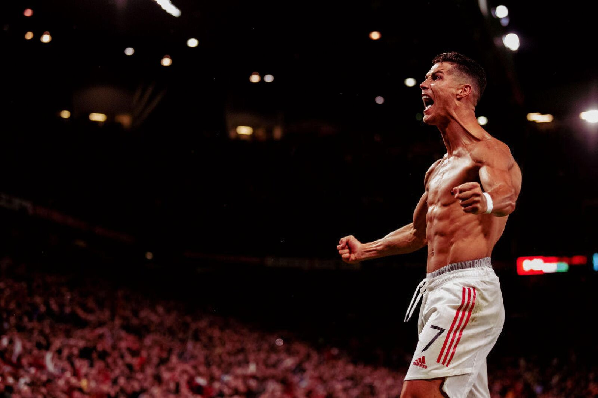

CRISTIANO RONALDO
Background image: Manchester United v Villarreal CF: Group F - UEFA Champions League by Ash Donelon at https://www.gettyimages.com/detail/news-photo/cristiano-ronaldo-of-manchester-united-celebrates-scoring-a-news-photo/1235587780?adppopup=true
The GOAT
Who is Cristiano Ronaldo?
Cristiano Ronaldo dos Santos Aveiro, widely known as Cristiano Ronaldo, stands as a towering figure in the world of football, embodying the epitome of dedication, skill, and unparalleled success. Born on February 5, 1985, in Funchal, Madeira, Portugal, Ronaldo's journey from a modest upbringing to becoming one of football's greatest icons is a testament to his relentless work ethic, ambition, and extraordinary talent. His career began at Sporting CP, where his remarkable abilities quickly caught the attention of the world's top clubs, leading to a transfer to Manchester United in 2003. At United, Ronaldo developed into a formidable force, combining his speed, skill, and scoring ability to help the team secure multiple Premier League titles and a UEFA Champions League victory.
Background image: Portugal v France - Final: UEFA Euro 2016 by Laurence Griffiths at https://www.gettyimages.com/detail/news-photo/cristiano-ronaldo-of-portugal-holds-the-henri-delaunay-news-photo/545932862?adppopup=true
Who is Cristiano Ronaldo?
Ronaldo's transfer to Real Madrid in 2009 marked the beginning of an era of dominance and record-breaking achievements. At Madrid, he shattered scoring records, won four Champions League titles, and earned four Ballon d'Or awards, cementing his legacy as one of the greatest players of all time. His career journey continued with successful stints at Juventus and a historic move to Al Nassr, highlighting his enduring impact on the sport. Beyond his club success, Ronaldo has been a pivotal figure for the Portugal national team, leading them to victory in Euro 2016 and the 2019 UEFA Nations League. Off the pitch, Ronaldo is known for his philanthropy, business ventures, and as a global sports ambassador, inspiring millions with his dedication to excellence and relentless pursuit of greatness.